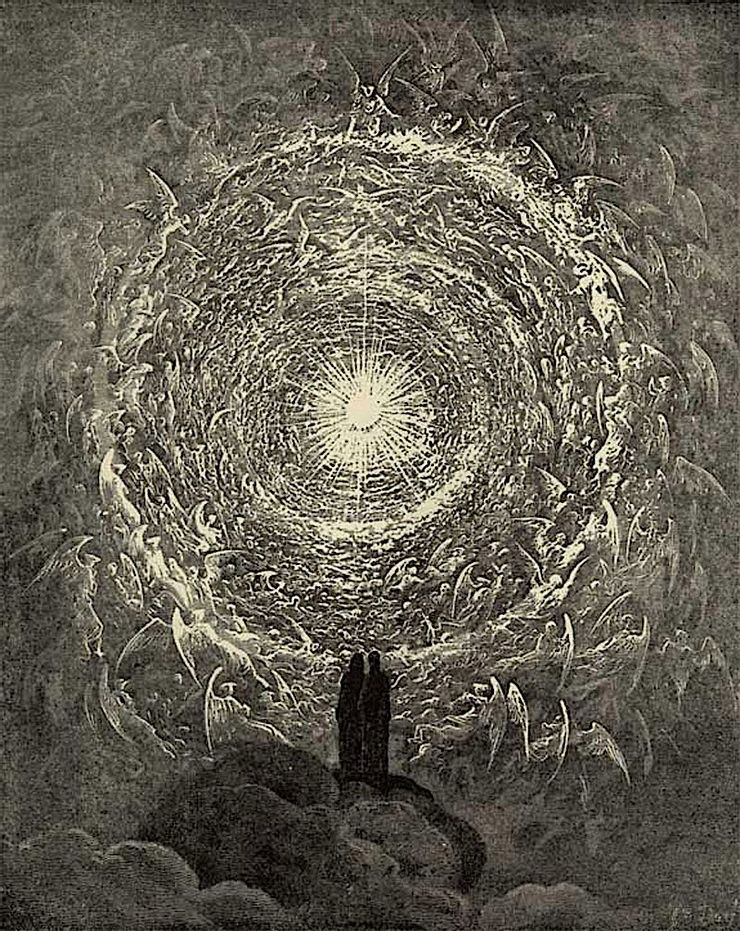

📖《神曲》是意大利诗人但丁·阿利吉耶里的代表作，被认为是世界文学史上最伟大的作品之一。这部史诗创作于1308年至1320年间，全诗分为《地狱篇》《炼狱篇》《天堂篇》三部分，共14233行。
作品以寓言的形式描绘了基督教世界观中的死后世界，通过诗人穿越地狱、炼狱、天堂的旅程，展现了中世纪欧洲的宗教、哲学、政治和道德观念。但丁在诗中融合了古希腊罗马文化传统与基督教神学，创造出一个宏大而复杂的宇宙图景。
这部作品对后世文学产生了深远影响，被视为意大利语文学的奠基之作，也是文艺复兴时期人文主义思想的重要源头。
地狱篇（Inferno）：诗人迷失在黑暗森林中，被古罗马诗人维吉尔引导，穿越九层地狱。每一层关押着犯下不同罪孽的灵魂，从轻微的罪过到最严重的背叛，罪孽越深重，所处的层次越低。但丁在这里目睹了各种 punishments（惩罚）的具象化呈现。
炼狱篇（Purgatorio）：维吉尔带领但丁攀登炼狱山。炼狱分为七层，对应七宗罪：傲慢、嫉妒、暴怒、懒惰、贪婪、暴食、色欲。灵魂们在此通过苦修净化自己，为升入天堂做准备。这里的氛围与地狱截然不同，充满希望与光明。
天堂篇（Paradiso）：但丁在贝阿特丽切的引导下游历天堂九重天，从月球天到原动天，最终抵达最高的 empyrean（天府），得见上帝之光。这一部分充满了神秘主义色彩和复杂的神学思辨。
《神曲》是一部需要反复阅读的巨著。初读时被其宏大的结构和对死后世界的想象所震撼，再读时则更能体会但丁对人性、道德、正义的深刻思考。
细读之后，我发现这部作品本质上是一部"劝教"之作。但丁构建的宇宙图景中，信仰成为决定灵魂归宿的关键：地狱第一层（灵薄狱）关押着那些生前品行端正却不信教的人——他们既不受酷刑折磨，也无法升入天堂，永远处于一种"什么都不会发生"的悬置状态，既无痛苦也无希望。
但更关键的是"悔改"。信教但犯了大罪且临终未悔改的人，同样会下地狱，没有出路。炼狱的"入场资格"是：信教 + 临终前真心悔改。所以，信仰加上忏悔，才是完整的救赎之路。这种设定颇为耐人寻味：单有信仰不够，单有善行也不够，必须两者兼备且临终悔改，才能获得进入炼狱、最终升入天堂的机会。
地狱中的人永远没有出路，他们的惩罚是永恒的；而炼狱中的人知道自己终将升入天堂，因此甘愿承受净化的痛苦。这种对比让我意识到，但丁笔下的"希望"与"绝望"之别，核心在于是否拥有通向救赎的可能性。
天堂篇是最难理解的部分，充斥着中世纪神学和哲学的概念。但最后但丁见到上帝之光的时刻，那种对终极真理的渴望和瞬间的顿悟，超越了宗教的边界，触及人类永恒的精神追求。
这部作品的伟大之处在于它既是一部个人精神之旅的记录，也是对整个中世纪文明的总结，更是一部永不过时的人性百科全书。